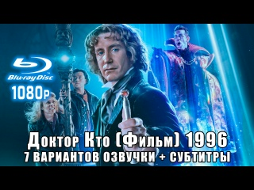
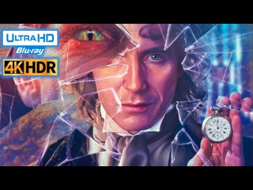
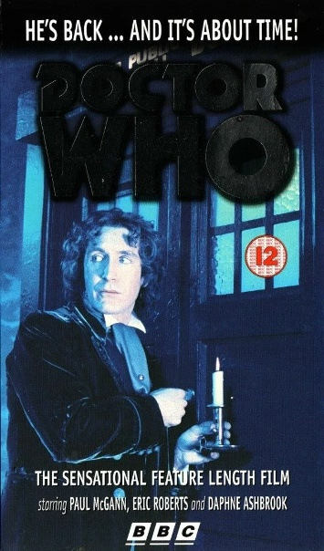
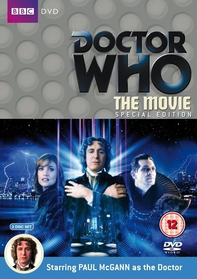
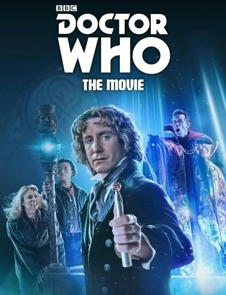
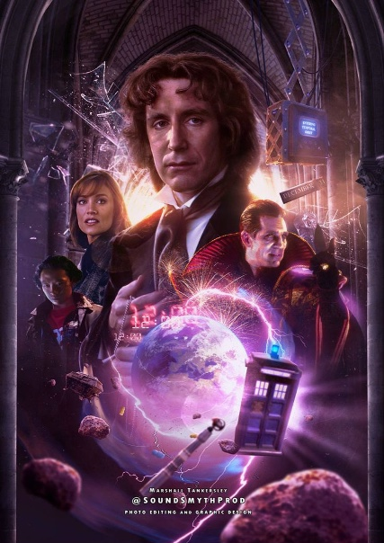
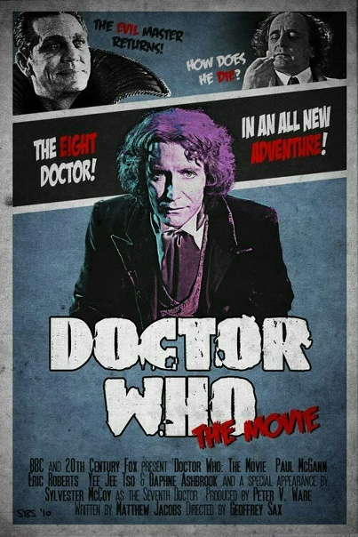
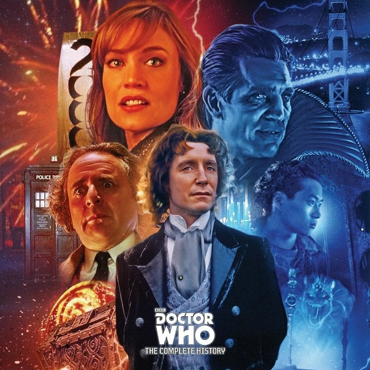
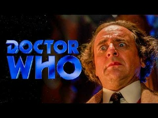

помощник
* AVO: Петр Карцев, Сергей Кузнецов * VO: Саня Белый, MXP + Original [ENG] Субтитры: Русские {TrueTransLate} и Английские |  |
|---|---|
* AVO: Петр Карцев, Сергей Кузнецов * VO: Саня Белый, MXP + Original [ENG] В озвучке "Pazl Voice", проведена работа с сохранением звука 5.1 Звук 7.1 только на оригинальной английской дорожке |  |
Doctor Who: The Movie
телевизионный фильм
12 мая 1996
Формат: 85-минутный телефильм
| помощник |
Седьмой Доктор везёт останки Мастера на Галлифрей, но тот устраивает поломку в ТАРДИС — и Доктор оказывается в Сан-Франциско, канун 2000 года. Сразу после приземления его расстреливают уличные бандиты, в больнице кардиохирург Грейс Холлоуэй случайно убивает его на операционном столе, а в морге он регенерирует в Восьмого Доктора. Тем временем Мастер захватывает тело парамедика и пытается украсть тело Доктора себе, а заодно открывает Глаз Гармонии внутри ТАРДИС — если его не закрыть до полуночи, Земля будет уничтожена.
Снят в Ванкувере совместно BBC, Universal и Fox — первый эпизод «Доктора Кто», снятый полностью за пределами Великобритании. Премьера — 12 мая 1996 года на канадском телевидении, 14 мая в США, 27 мая в Британии. Сильвестр Маккой вернулся для сцен регенерации, а Пол Макган стал Восьмым Доктором — причём носил парик, как Уильям Хартннелл в своё время. Эпизод посвящён памяти Джона Пертви, скончавшегося за неделю до премьеры.
Несколько спорных решений: Доктор заявляет, что он наполовину человек — по материнской линии; впервые в сериале целует спутницу; а «маскировочный контур» ТАРДИС называет «cloaking device» вместо привычного «chameleon circuit». Эрик Робертс в роли Мастера стал первым американским актёром в этой роли — и декламировал текст с таким южным акцентом, что британские зрители были в шоке. Питер Капальди признался, что отказался от прослушивания на роль Восьмого Доктора. Сониковая отвёртка вернулась после 14-летнего перерыва — последний раз её видели в «Визите» (1982). А Глаз Гармонии, который в классическом сериале находился на Галлифрее, тут оказался внутри ТАРДИС.
Фильм задумывался как пилот для возрождения сериала, но рейтинги в США оказались низкими, и Fox не заказал сериал. В Британии же посмотрели более 9 миллионов зрителей, и фильм получил премию «Сатурн» за лучшую телепостановку. Восьмой Доктор вернётся на экран только в 2013 году — в мини-эпизоде «Ночь Доктора».
 VHS - май 1996 |  DVD - 13 августа 2001 |  DVD Slipcase - 13 августа 2001 |
|---|---|---|
  DVD-SE+Boxset - 4 октября 2010 | Blu-ray - 19 сентября 2016 |  BluRay 4К - 25 мая 2026 |






